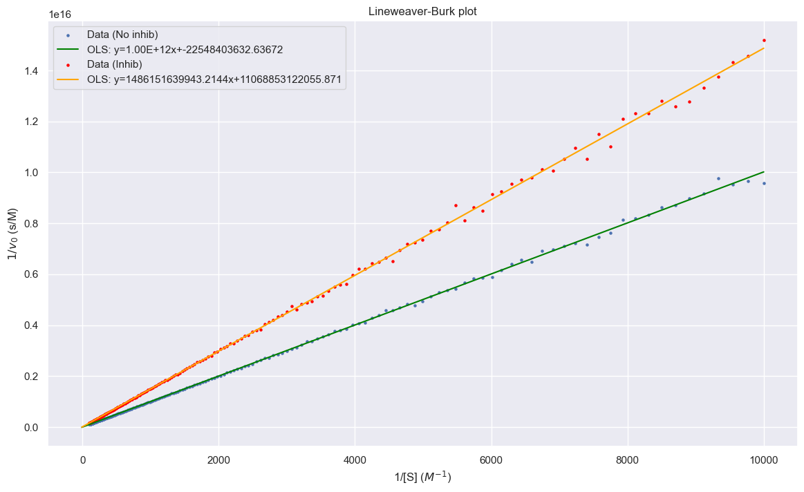

-
Part 0: Introduction
- Introduction Part I: Foundations
- Probability, Statistics, & Entropy
- Thermodynamics
- Advanced Thermodynamics
- Kinetics & Equilibrium
- Statistical Mechanics Part II: Applications
- Ligand Binding
- Michaelis-Menten Kinetics
- Stochastic Processes
- Diffusion
- Protein Biochemistry
- Protein Folding
- Nucleic Acids
Introduction
Who this text is for
This text is aimed at students at junior level or higher who are interested in biophysical chemistry or want a free supplemental text on the subject.What this text aims to do
The aim of this textbook is to provide a free resource to help teach biophysical chemistry. Some points of emphasis for this textbook are the inclusion of code and the ability to be continually updated.Limitations
This resource is a side project done by just 1 person. Images are self-made or taken from Wikipedia under fair use.Requirements
Math
- This textbook will assume knowledge of single variable calculus.
- Multivariable calculus will be used for derivations, especially in the physics-focused chapters.
- Properties of logarithms and exponentiatials will be used
- Differential equations will appear, but will not require understanding for how to solve, merely recognizing what the equation mean.
- Linear Algebra will be used in the some of the later probability-focused chapters, such as Markov Chains
- Basics of probability and statistics will be assumed
Physics
- Not much physics is required, just basic understanding the concept of energy, kinetic energy, potential energy, force, etc.
Chemistry
- General chemmistry knowledge will be assumed
- Basics of organic chemistry will be assumed.
- Ability to understand shorthand for structures
- Nucleophile, electrophile concepts
Biology
- Familiarity with central dogma of biology
- Basic knowledge of nucleic acids
- Basic knowledge of proteins
Programming
Programming knowledge is not a prerequisite for understanding the material in the book.In order to generate many of the figures, I have used programming, mainly Python. Code will be sometimes be displayed if you wish to run simulations yourself similar to the figures; however, it is not crucial.
Other Recommended Resources
The Molecules of Life (TMOL)
This is a great textbook with many specific examples of applications to biology.Probability, Statistics, and Entropy
Probability
Defining terms
Before we show any equations, we must define some terms. Let A and B be events. We will also denote \(\Omega\) to be the set of all possible outcomes.- P(A) is the probability of event A occurring
- \(P(A\cup B)\) is the probability of A or B or both occurring. The \(\lor\) can also be seen instead of \(\cup\)
- \(P(A\cap B)\) is the probability of A and B both occurring. The \(\land\) can also be seen instead of \(\cap\)
- \(P(\neg A)\) is the probability of A not occurring. This can also be written as a bar above the A
Basic Rules
The sum of the probabilities of all possible outcomes must equal 1. For discrete distributions this can be stated as $$\sum P(x_i)=1$$ and for continuous distributions, we can write $$\int_{-\infty}^{\infty}p(x)dx=1$$ Inclusion-Exclussion Principle $$P(A\cup B)=P(A)+P(B)-P(A\cap B)$$Cumulative Density Function
The cumulative density function states the probability of getting the outcome being less than or equal to a given x. We will define a Cumulative Density Function (CDF) formally as $$F(x)=P(X\leq x)$$ where X is the value of the random variable and x is a chosen value or cutoff point of interest. For discrete variables, we can formulate this as $$F(x)=\sum_{x_i\leq x}p(x_i)$$ where \(x_i\) is a possible value that X takes. For continuous variables, we have $$F(x)=\int_{-\infty}^xf(y)dy$$ where f(y) is the probability density at y. We can consequently calculate the probability of being between two values as follows: $$P(a\leq X\leq b) = F(b)-F(a)$$ Another common definition is that of the survival function. We define this as $$\bar{F}(x)=1-F(x)$$ Thus the survival function is also equivalent to $$\bar{F}(x)=P(X\gt x)$$De Morgan's Laws
De Morgan's laws describe how negation interactions with grouping of events. The statements can be rather formal, but verbally seem obvious. "If neither A nor B happened, then that means A didn't happen and B didn't happen" $$\neg(A \lor B)=(\neg A)\land (\neg B)$$ "If A and B didn't both happen, then that means either A didn't happen, B didn't happen, or neither happened" $$\neg(A \land B)=(\neg A)\lor (\neg B)$$Conditional Probability
Let A and B be two events. We denote the conditional probability of A occurring given B having occurred as \(P(A|B)\) This is defined mathematically as: $$P(A|B)\equiv \frac{P(A \cap B)}{P(B)}$$ where \(P(A\cap B)\) is the probability of both A and B occurring.Bayes' Theorem
Bayes' Theorem relates two events and the conditional probabilities of one upon another. Let A and B two events with non-zero probabilities $$P(A|B)=\frac{P(B|A)P(A)}{P(B)}$$Expected Value and Variance
Given a probability distribution, what properties can we discern? Let E[f(X)] denote the "Expected value," which can be thought of as the density-weighted mean, for a function f(x) on a distribution X. We can calculate this as $$E[f(X)]=\sum_{x_i}f(x)\times p(X=x_i)$$ or in the continuous case $$E[f(X)]=\int_{-\infty}^{\infty}f(x)p(x)dx$$ If we wanted to calculate the mean of a distribution, we can use f(X)=x and calculate the expectation. $$E[X]=\int_{-\infty}^{\infty}xp(x)dx$$ Another common statistic that is used to describe a distribution is the variance. $$\text{Var}(X)=E[X^2]-(E[X])^2$$ We can calculate this by separately calculating the expectations for \(E[X^2]\) and E[X].Example
The Bernoulli Distribution is given by $$P(X=1)=p$$ $$P(X=0)=1-p$$ Calculate the mean and variance of the distribution. $$E[X]=\sum x_i p(x_i)$$ $$=1\times p + 0 \times (1-p)$$ $$=p$$ $$E[X^2] = \sum x_i^2 p(x_i)$$ $$=1^2 \times p + 0^2 \times (1-p)$$ $$=p$$ $$\text{Var}(X)=e[X^2]-(E[X])^2$$ $$=p-p^2$$ $$p(1-p)$$Multivariate Distributions
A distribution can output a set of random variables. $$F(x_1,\dots,x_n)=P(X_1\leq x_i,\dots,X_n\leq x_n)$$ We say that \(X_1,\dots,X_n\) are independent if $$F(x_1,\dots,x_n)=\prod_{x_i}P(X_i\leq x_i)$$ We can use the notation $$F_{X_i}(x_i)\equiv P(X_i\leq x_i)$$ We can define the density of a multivariate distribution as $$f(x_1,\dots,x_n)\equiv\frac{\partial^n}{\partial_1\cdots\partial_n}F(x_1,\dots,x_n)$$ We can also define a function called the marginal density. Let us consider a bivariate distribution given by \(x_1\) and \(x_2\). $$F_{X_1}(x_1)=\int_{-\infty}^{\infty}f(x_1,x_2)dx_2$$ Using the marginal densities, we can arrive at an alternative definition of independence. Two random variables are independent if $$f(x_1,x_2)=f_{X_1}(x_1)f_{X_2}(x_2)\forall(x_1,x_2)$$ Let us define the conditional distribution of \(X_1\) given \(X_2=x_2\) $$F_{X_1|X_2}(x_1|X_2)\equiv P(X_1\leq x_1|X_2=x_2)$$ The marginal density is more useful in practice $$f_{X_1|X_2}(x_1|x_2)=\frac{\partial}{\partial x_1}F_{X_1|X_2}(x_1|x_2)=\frac{f(x_1,x_2)}{f_{X_2}(x_2)}$$ Equivalently, $$f(x_1,x_2)=f_{X_1|X_2}(x_1|x_2)f_{X_2}(x_2)$$Covariance and Correlation
How do we quantify how two variables co-move?Let us define the Covariance between \(X_1\) and \(X_2\) as $$\text{Cov}(X_1,X_2)=E[X_1X_2]-E[X_1]E[X_2]$$ The special case of the covariance of a random variable with itself is equal to the variance.
We can normalize this into the Pearson correlation (often just called correlation) as follows: $$\rho(X_1,X_2)=\frac{\text{Cov}(X_1,X_2)}{\sqrt{\text{Var}[X_1]\text{Var}[X_2]}}$$ What must be emphasized is that a correlation of 0 does not mean that two variables are independent. A correlation of 0 is a necessary but not sufficient condition. For example, take a random variable that is distributed like \(X\sim N(0,1)\) and another variable Y=abs(X). The correlation is 0, but they are not independent.
Also, Pearson correlation only captures linear behavior between two variables. Another metric for monotonic behaviour between two random variables is Spearman correlation.
Entropy
Multiplicity
If we flip a coin twice, the most likely outcome for the number of heads we get is 1. How is this possible if the coins are fair and independent? The answer has to do with that there are two possible sequences which will give you 1 head, TH and HT, while there are only 1 sequence each for 0 heads and 2 heads. We will call this phenomenon of their being different number of sequences for each outcome "multiplicity." To further use the coin analogy, we will call the specific sequence the microstate and the total number of heads to be the state or macrostate. Each microstate is equally likely, but there are 2 microstates that correspond to the 1 heads macrostate.Given M coin flips, the number of ways to get N heads would be given as: $$W=\frac{M!}{N!(M-N)!}$$ However, this restricts us to only 2 outcomes. What if we require more?
A generalized multiplicity formula for arranging Z types of things in M spaces is $$W=\frac{M!}{\prod N_{i}!}=\frac{M!}{N_{1}!*N_{2}!*...*N_{Z}!}$$ If there are only two possible types and M total and N of type 1, then \(N_2=M-N\) and it reduces to $$W=\frac{M!}{N!(M-N)!}$$
Definitions of Entropy
Entropy is typically described as being a measure of "disorder," but how does that manifest? With words, we can describe entropy for now as a measure of how mixed a system is or how many microstates a given macrostate has.There are 3 main formulas that we will be considering: $$S=k_B\ln(W)$$ $$S=-k_B\sum p\ln(p)$$ $$dS=\frac{dq}{T}$$ These will be called the statistical definition, the probabilistic definition, and thermodynamic definition respectively.
Extensive and Intensive Properties
A property of a system is said to be extensive if it is proportional to the size of the system. One example is mass; if the system is 1L of water, going to 2L of water will double the mass. These properties are often not ratios and can often be intuited via thought experiment.A property of a system is said to be intensive if it remains constant when a system is scaled. Density is an example of an intensive property. In the previous example, the density of the system does not change when you go from 1L of water to 2L of water. Mass and volume of the system both double, which cancel out when you take the ratio to get density.
Some properties are neither extensive not intensive if they scale but in a non-linear proportional way. The most notable example is multiplicity. This can be shown if every number in the above calculation is doubled due to the factorial operator. Entropy at large scales behaves like an extensive property, but at very small scales, this does not always hold.
Normal Distribution
Also called a Gaussian or Bell-curve, the Normal distribution is an essential distribution to know. It is parameterized by two values:- The mean, \(\mu\), which states the center of the distribution
- The variance, \(\sigma^2\), which describes the width of the distribution
This is a continuous probability distribution whose density is given by $$f(x)=\frac{1}{\sqrt{2\pi \sigma^2}}e^{-\frac{1}{2}(\frac{x-\mu}{\sigma})^2}$$ If the normal distribution has parameters \(\mu=0\) and \(\sigma^2=1\) then we refer to it as a standard normal distribution.
Properties
- Has non-zero probability density everywhere
- Symmetric
- Antiderivative does not have a closed-form
Law of Large Numbers
Central Limit Theorem
Practice Problems
- The exponential distribution is given by \(f(x)=ae^{-ax}\) for \(x\geq 0\) and 0 for \(x \lt 0\). Determine the mean and variance.
The following identities may be useful:
- \(\int xe^{-ax}dx=-\frac{e^{-ax}(ax+1)}{a^2}+c\)
- \(\int x^2e^{-ax}dx=-\frac{e^{-ax}(a^2x^2+2ax+2)}{a^3}+c\)
Introductory Thermodynamics
Laws of Thermodynamics
First Law of Thermodynamics
The first law can be formulated in different ways. A common source of confusion for students is the seemingly inconsistent formula.Variant 1: $$\Delta U=q+w$$ Variant 2: $$\Delta U=q-w$$ So why will you see both? This is due to differences between authors in how they define the quantities in the equation. Let's start by defining q, which we will call "heat," since this is less controversial. q will be the heat added to the system. Heat flowing (positive q) into the system will increase the amount of internal energy intuitively, so a positive q will contribute to an increase in energy. Heat flowing out of the system (negative q) will decrease the amount of internal energy.
Now, for defining w, which is the "work" term. Here are the two equations again with their definition
- \(\Delta E=q+w\), positive w here is defined as work done to the system and negative w is defined as work done by the system
- \(\Delta E=q-w\), positive w here is defined as work done by the system and negative w is defined as work done to the system
Now, the terms work and heat have not been preicsely defined yet. Working definitions for the terms at this point will be:
- Work is controlled, harnessed transfer of energy
- Heat is uncontrolled transfer of energy
- Expansion work or "pV work," such as a piston moving due to a pressure difference.
- Chemical work, which harnesses energy from chemical reactions
Second Law of Thermodynamics
The second law of thermodynamics states that total entropy is non-decreasing over time. $$\Delta S_{universe}\geq 0$$ This is sometimes put into formula by breaking down the universe into the "system" or thing of interest and the "surroundings" or everything else. $$\Delta S_{sys}+\Delta S_{surr} \geq 0$$ A common mistake that students make is interpreting it as saying that entropy cannot decrease locally. This is not true. Entropy can very well decrease in a system, but it will be offset by a greater increase in the surroundings. In fact, much of biology involves this very trade-off.Energy
Forms of Energy
Energy can take different forms. The two main categories are Kinetic and Potential energy. As its name suggests, kinetic energy is associated with movement. Here are 3 forms which we will consider throughout the book:- Translational: a molecule's movement through space
- Rotational: a molecule rotating about some axis
- Vibrational: bonded atoms vibrating
- Chemical bonds
- Gravitational
- Concentration gradients
- Electrostatic interactions
- Compressed spring
Physics Equations
As one formulation of the First Law states, there is conservation of energy with no input or removal from the system. However, energy can be converted from one form to another. Imagine a ball rolling off of a table; its gravitational potential energy gets converted into kinetic energy, sending it downward. U sometimes refers to potential energy, but also internal energy in general. In this section, U will refer to Potential energy and E will refer to Total energy.In this section, positive work will refer to work done by the system which is opposite what we had before, but it is common convention. $$W=-\Delta U$$ How is are work required and potential energy related to forces? $$W=\int F\cdot dx$$ The work done is the integral of the force, F, applied over the distance. This force may be a function of the position, x.
Hooke's Law
Hooke's law describes the restoring force in a spring. In plain English, Hooke's law states that the restoring force a spring has is proportional to the displacement from the rest length. $$F=-k(x-x_0)$$ where x is the length of the spring, \(x_0\) is the rest length of the spring, k is the spring constant, and F is the force. The sign is negative as the force counteracts the stretching and applies a force in the opposite direction. We can also call \(x-x_0\) to be simply x by having our coordinate system have x_0=0; longer is positive x; compressed is negative x. Using our formula for work, we can calculate the work required to stretch a spring. $$W=\int_0^z (-k x) \cdot dx$$ Because the force is in the opposite direction as the dx vector, we get an additional negative sign which cancels things out. $$W=\int_0^z(kx)dx$$ $$=\frac{1}{2}kz^2$$ The work required is \(\frac{1}{2}kz^2\) which will be converted into potential energy.Electrostatics
Another common force is electrostatic. The electrostatic force between two point charges is described by Coulomb's Law. $$F=\frac{1}{4\pi D\varepsilon_0}\frac{q_1q_2}{r^2}$$ where F is the force, D is the dielectric constant for the medium, \(\varepsilon_0\) is the vacuum permittivity (a constant), \(q_i\) is the charge of particle i, and r is the distance between the two charged particles. In this form of Coulomb's Law, a negative value for F means an attractive force and a positive F means a repulsive force.Morse Potential
The harmonic oscillator/Hooke's law model is treating a molecule as if it were two nuclei connected by a spring in a classical sense. The potential energy is $$U=\frac{1}{2}k(r-r_e)^2$$ where U is your potential energy of the spring, k is your spring constant, r is the distance between the atoms and \(r_e\) is the equilibrium bond distance. So this energy function looks like a parabola with a minimum at \(r=r_e\).This model is pretty decent at describing behavior close to the equilibrium bond distance, but as r gets further away from \(r_e\), we need a better model. This is where the Morse potential comes in. This is an improved version which takes into account things like nuclear-nuclear repulsion from Pauli's exclusion principle and bond dissociation. When r is too small, the Morse potential jumps in potential energy quicker than with a simple Hooke's law approximation. Bonds can't stretch infinitely; bonds break if separation grows too large. The Morse potential takes this into account by having U asymptotically approach a value in the limit as r goes to infinity instead of continuing to increase quadratically. The limit as r approaches infinity is your bond dissociation energy. The equation for the morse potential is given by $$U(r)=D_e (1-e^{-a(r-r_e)})^2$$ where \(D_e\) is related to the dissociation energy.
Lennard-Jones Potential
The Lennard-Jones potential describes Van der Waals interactions between two molecules. The potential is given by $$U(r)=4\varepsilon \left[(\frac{\sigma}{r})^{12}-(\frac{\sigma}{r})^6\right]$$Advanced Thermodynamics
Introduction
This section will delve deeper into thermodynamics. Multivariable calculus will be used to expand upon topics covered earlier as well as introduce new topics. The Fundamental Thermodynamic Relation will be covered as an extension of the first law.Laws of Thermodynamics Revisited
Total derivatives
While the derivation is outside the scope of this textbook, the first law can be expressed as the following total derivative: $$dE=(\frac{\partial E}{\partial S})_{V,N}dS+(\frac{\partial E}{\partial V})_{S,N}dV+\sum(\frac{\partial E}{\partial N_i})_{S,V}dN_i$$ $$=TdS-p_{ext}dV+\sum\mu_idN_i$$ where T is temperature, \(p_{ext}\) is external pressure, V is volume, \(\mu_i\) is the chemical potential for a chemical species i, and \(N_i\) is the number of species iTemperature and Entropy
From the Fundamental Thermodynamic Relation, we have: $$(\frac{\partial S}{\partial E})_{N,V}=\frac{1}{T}$$ If \(T_{A}>T_{B}\), then \(\frac{1}{T_{A}}<\frac{1}{T_{B}}\) $$(\frac{\partial S_{A}}{\partial E_{A}})_{N,V}<(\frac{\partial S_{B}}{\partial E_{B}})_{N,V}$$ by substituting in the thermodynamic definition for temperature, we see that the lower temperature system, B, would have a greater change in entropy for the same change in energy. This means that there would be a net entropy increase if energy were to flow from A to B. So when would this heat flow stop? When entropy is maximized/equilibrium. The termination condition would be when there is no net increase in entropy due to heat flow or in mathematical terms: $$(\frac{\partial S_{A}}{\partial E_{A}})_{N,V}=(\frac{\partial S_{B}}{\partial E_{B}})_{N,V}$$ which is equivalent to saying $$\frac{1}{T_{A}}=\frac{1}{T_{B}}$$ or alternatively $$T_{A}=T_{B}$$ In plain English to summarize: For the same amount of energy added to a system, the one with the lower temperature would increase in entropy more. Conversely, for the same amount of energy taken out of a system, the one with a higher entropy would decrease in energy less. Therefore, if you take energy from the higher temperature system and put it into the lower temperature system, there will be a net increase in entropy. This will change the temperatures of the systems, bringing them closer together. This exchange in energy will stop when the temperatures are the same, or when there is no longer a possible increase in energy from taking energy from one system and putting it in another.Enthalpy and the Thermodynamic Definition of Entropy
Deriving the Thermodynamic Definition of Entropy
By the differential form of the first law of Thermodynamics, we have $$dE=(\frac{\partial E}{\partial S})_{V,N}dS+(\frac{\partial E}{\partial V})_{S,N}dV+\sum(\frac{\partial E}{\partial N_i})dN_i$$ $$=TdS-p_{ext}dV+\sum\mu_idN_i$$ *Negative sign for pressure since our dV is pointing in opposite direction of \(p_{ext}\). Let us define a quantity called Enthalpy, denoted by H, as follows: $$H\equiv E+PV$$ Through the product rule for differentiation: $$dH=dE+d(PV)=dE+(pdV+Vdp+dVdp)$$ Substituting in the total differential form of the first law from above for dU: $$=(TdS-pdV+\sum\mu_idN_i)+pdV+Vdp+dVdp$$ The dVdp term goes to 0 in the limit. The pdV term from work cancels out with one of the terms from the product rule for d(PV). $$=TdS+Vdp\sum\mu_idN_i$$ If we are working in a constant temperature environment and no chemical reactions are taking place, we can let dp=0 and \(dN_i=0\forall i\), yielding the formula $$dH=TdS=\delta q$$ $$dS=\frac{\delta q_{rev}}{T}$$ This is the so-called "Thermodynamic definition of Entropy" which holds for a reversible process at constant pressureIrreversible Processes
However, what about for irreversible processes? The first law still holds such that $$U=q+w$$ but \(q_{rev}\leq q_{irr}\) and \(w_{rev}\geq w_{irr}\). A more general statement which holds for irreversible processes is $$dS\geq \frac{\delta Q}{T}$$ with equality when the process is reversible. This is known as the Clausius Inequality, which is another way of formulating the 2nd law.An Aside on Legendre Transforms
In the first law, we had $$dU=TdS-pdV+\sum\mu_idN_i$$ and when we defined Enthalpy as \(H\equiv U+PV\), we ended up getting $$dH=TdS+Vdp+\sum\mu_idN_i$$ By adding PV, we were able to switch the positions of the Volume and Pressure variables (along with a sign change). By doing this, we can now have a quantity that is more convenient to work with when we assume different conditions (e.g. constant pressure instead of constant volume). This is from which we got heat being the change in energy at a fixed volume and the change in enthalpy at fixed pressure equivalencies (set dV=0 or dP=0 in the above equations).This is a theme that will recur for the Helmholtz and Gibbs free energies where instead we will switch temperature and entropy, as dT=0 is more feasible than dS=0. These paired variables are known as "conjugate variables," and the process of switching the differential between the extensive and intensive variable is known as a Legendre transformation.
Helmholtz Free Energy and Gibbs Free Energy
Let us define a quantity Helmholtz Free Energy, denoted by A (The letter A was chosen for the German word for work as H was already being used for Enthalpy; some books use F for free energy): $$A\equiv U-TS$$ Doing a similar trick as we did for Enthalpy - taking the derivative of both sides and using the linearity of the derivative operator: $$dA=dU-d(TS)$$ Substituting in for dU using the first law; product rule for d(TS) $$dA=(TdS-pdV+\sum\mu_idN_i)-(TdS+SdT+dSdT)$$ Canceling out TdS terms and dSdT goes to 0 $$dA=-pdV-SdT+\sum\mu_idN_i$$ If we are working in a constant temperature system (dT=0) and constant Volume, then we find that the change in Helmholtz free energy is the amount of chemical work being done.It is also possible to do what we did for Enthalpy and Helmholtz for a single quantity. Let us define a quantity Gibbs Free Energy, denoted by G: $$G\equiv U+PV-TS=A+PV=H-TS$$ In general chemistry, Gibbs free energy is often introduced as $$G=H-TS$$ so the derivation will go from that point. $$dG=dH-d(TS)$$ Substituting in our above result for dH; product rule for d(TS) $$dG=(TdS+Vdp+\sum\mu_idN_i)-(TdS+SdT+dSdT)$$ Cancelling out TdS terms; dSdT goes to 0 $$dG=Vdp-SdT+\sum\mu_idN_i$$ If we are working in a constant temperature system and constant pressure, then the change in Gibbs free energy is the amount of chemical work.
Kinetics
Refresher on Kinetics
Elementary Reactions
Let us consider elementary reactions - that is they have no intermediate steps: Let A, B be the reactants and P be the product (not Phosphorus). For single step unidirectional reactions, we can write an equation that describes the rate of change in chemical species: $$A\rightarrow P$$ Instinctively, if this is the only reaction taking place, the concentration of A should be going down by the same rate by which the concentration of P goes up. $$\frac{d[A]}{dt}=-\frac{d[P]}{dt}$$ It would also be intuitive to think that the higher the concentration of A, the faster the reaction would go. Probabilitistically, a justification would be that each A molecule has a chance per unit time of converting to P. Then if each conversion is independent, you would expect the rate of conversion to be directly proportional to the number of A. Thus, we also get the relationship. $$\frac{d[P]}{dt}=k[A]$$ where k is a constant of proportionality which is specific to the reaction. We will call this the rate constant. Let us now consider a bimolecular, single-step unidirectional reaction: $$A+B\rightarrow P$$ By similar logic, we can write the following relationships: $$\frac{d[A]}{dt}=\frac{d[B]}{dt}=-\frac{d[P]}{dt}$$ $$\frac{d[P]}{dt}=k[A][B]$$Integrated Rate Laws
This section will involve solving a few simple differential equations. As thsi section is more concerned with the results and logic rather than the math, the derivations will not be especially rigorous and will be playing fast and loose with some math. Let us consider the simplest case, a reaction that has a rate-limiting step that is independent of concentration. $$\frac{d[P]}{dt}=k$$ If the mathematicians aren't watching, you can "multiply" by dt to get $$d[P]=kdt$$ While not good notation, we can itegrate from time t=0 to a a generic time t=t. $$\int_0^td[P]=\int_0^tkdt$$ $$[P]_t-[P]_0=kt$$ We would expect this as it is a constant rate process, so it should just be the rate multiplied by the amount of time.Now for a more realistic example. Consider a reaction with the rate law: $$\frac{d[A]}{dt}=-k[A]$$ Again we will want each variable to be on its own side. Using some algebra and abuse of notation, we get $$\frac{d[A]}{[A]}=-kdt$$ We can treat it as if we were integrating each side seperately. $$\int \frac{d[A]}{[A]}=\int-kdt$$ While it may appear intimidating, we are essentially just integrating \(\frac{1}{x}\) and a constant. $$ln([A]_t)-ln([A]_0)=-kt$$ In these sorts of problems, once we integrate, we then try to isolate the concentration at time t. $$ln([A]_t)=ln([A]_0)-kt$$ This is the linear form for a first order reaction. If you were trying to experimentally determine k, you could do regression for this equation. Exponentiating things, we get $$[A]_t=[A]_0e^{-kt}$$ This is the first order integrated rate law Now, we have an equation that describes the concentration over time, not just the rate. For completeness, consider a rate law corresponding to a reaction with the rate law: $$\frac{d[A]}{dt}=-k[A]^2$$ $$\frac{d[A]}{[A]^2}=-kdt$$ $$\int\frac{d[A]}{[A]^2}=\int-kdt$$ $$\frac{-1}{[A]_t}-\frac{-1}{[A]_0}=-kt$$ $$\frac{1}{[A]_t}=\frac{1}{[A]_0}+kt$$ This is the linear form for a second order reaction. If you were trying to experimentally determine k, this would be the equaiton that you would attempt to fit. $$[A]_t=\frac{1}{\frac{1}{[A]_0}+kt}$$
 So far, the integrated rate laws have been univariate. Differential equations with multiple variables are possible and are called "Partial Differential Equations" or PDEs.
So far, the integrated rate laws have been univariate. Differential equations with multiple variables are possible and are called "Partial Differential Equations" or PDEs.
Dynamic Equilibrium
Until now, we have been considering reactions that only go in one direction. In many reactions, however, products are also undergoing the reverse reaction. Eventually the concentrations of the products and reactants will no longer change. However, this does not mean that chemical reactions are not still going on. What is actually happening is the forward reaction is happening at the same rate as the reverse reaction. This is known as dynamic equilibrium.Let us consider a system where two elementary reactions are going on: $$A\rightarrow^{k_1} B$$ $$B\rightarrow^{k_{-1}} A$$ As shorthand, we can combine these two lines into one: $$A\rightleftharpoons_{k_{-1}}^{k_1} B$$ We can now introduce a more general form of writing rate laws:
- Write the rate laws for all the unidirectional reactions
- Write the change in concentration for a species as the sum of the simple rate laws where it is a product minus the sum of all the simple rate laws where it is a reactant
A:
- Produced
- \(k_{-1}[B]\)
- Consumed
- \(k_1[A]\)
- Produced
- \(k_1[A]\)
- Consumed
- \(k_{-1}[B]\)
Statistical Mechanics
Boltzmann Distribution
Equilibrium
We previously went over microstates in the probability chapter. A system at equilibrium has states that are populated proportional to $$p(a)= \frac{e^{-\frac{E_a}{k_BT}}}{Q}$$ where p(a) is the population of a microstate a, \(E_a\) is the energy level of state a, \(k_B\) is Boltzmann's constant (\(1.38\times 10^{-23}\)J/K), T is temperature, and Q is a normalization factor. Sometimes we will instead write the denominator for the exponent as $$\beta = \frac{1}{k_BT}$$ We can also describe the ratio of how populated two microstates are by $$\frac{p(a)}{p(b)}=e^{-\frac{E_a-E_b}{k_BT}}$$ We can write this without a proportionality as the normalization factor cancels out. This implies that two microstates with the energy are equally populated at equilibirium. It also states that microstates at lower energy will be more populated than high energy microstates.Multiplicity
What the Boltzmann distribution gave us was a way to relate populations of microstates, but what about states? Let us consider a two level system.- 1 ground state (G) - Energy=0
- 2 excited states (A and B) - Energy=E
Maxwell-Boltzmann Distribution
So we've seen that the Boltzmann distribution makes lower energy microstates more populated. Does this mean that lower energy states are always more populated? The answer is not necessarily; higher energy macrostates can be more populated if there are more microstates than there are in the lower energy levels and you are at a sufficient temperature. One example is how speed for molecules are distributed, called the Maxwell-Boltzmann distribution. The multiplicity for the number of microstates for a given speed is proportional to the square of the speed, as it is like the surface area of a sphere of radius v, where v is the speed. The resulting distribution is shown below. Python code:
Python code:
def Maxwell_Boltzmann(x,T, m):
if type(x) == np.array or type(x) == list:
return np.array([Maxwell_Boltzmann(i,T,m) for i in x])
k_B = 1.38e-23
return (m/(2*np.pi*k_B*T))**(3/2)*(4*np.pi*x**2)*np.exp(-m*(x**2)/(2*k_B*T))
v_array = [i for i in range(0,1500)]
m_argon = 1.6605e-27*39.89
plt.figure(figsize=(14,8))
plt.plot(v_array,Maxwell_Boltzmann(v_array,T=200,m=m_argon))
plt.plot(v_array,Maxwell_Boltzmann(v_array,T=300,m=m_argon))
plt.plot(v_array,Maxwell_Boltzmann(v_array,T=500,m=m_argon))
plt.title("Maxwell-Boltzmann Plots for Argon")
plt.xlabel("Speed (m/s)")
plt.ylabel(f"Probability Density")
plt.legend(['200K','300K','500K'])
plt.show()
Heat Capacity
In order to calculate the average energy of the system, we can take the expected value of the energy $$\lt E \gt=\sum_{\nu}E_{\nu}P(\nu)$$ It can be shown that $$\lt E \gt = -\frac{\partial \ln Q}{\partial B}$$ By taking the second derivative of Q with respect to beta, it can be further shown that $$\text{Var}(E)=K_BT^2\frac{\partial \lt E \gt}{\partial T}$$Concentration and Its Effect
$$\Delta G = \Delta G^0 + RT \ln(Q)$$ where Q is the current concentration for the equilibrium K expression.Imagine a reaction of an ion going from one area to another with the two concentrations being different. $$Ca^{2+}_{left}\rightleftharpoons Ca^{2+}_{right}$$ Since there is no actual chemical reaction, \(\Delta G^0=0\) However, since the concentrations are different $$Q=\frac{[Ca^{2+}_{right}]}{[Ca^{2+}_{right}]}$$
Equilibrium and Gibbs
We are given \(\Delta G^0=-RT \ln(K)\) Equilibirium is reached when dG=0. $$0=-RT\ln(K)+RT\ln(Q)$$ Since log is a bijective function, we can conclude that equilibrium is reached when $$Q=K$$Osmosis
Protien-Ligand Binding
Introduction
Let us consider a ligand, L, that binds to a protein, P. $$P+L\rightleftharpoons P\cdot L$$ The equilibrium for this reaction is $$K_A=\frac{[P\cdot L]}{[P][L]}$$ Although it is traditional to talk in terms of the dissociation reaction $$K_D=\frac{1}{K_D}=\frac{[P][L]}{[P\cdot L]}$$ We can talk about the binding energy for the reaction through $$\Delta G^0 = -RT \ln(K_A)$$Fraction bound
Let us define a quantity, f, which is the fraction of proteins bound to ligand. $$f\equiv \frac{[P\cdot L]}{[P]+[P\cdot L]}$$ It can be shown by substituting in the dissociation equilibirium that $$f=\frac{[L]}{[L]+K_D}$$ We can see that when \([L]=K_D\), 50% of the proteins are bound to ligands. In the common situation where the concentration of ligand is much greater than the concentration of receptor protein, we can make the estimation
$$[L]_{\text{free}}\approx[L]_{\text{total}}$$
In the common situation where the concentration of ligand is much greater than the concentration of receptor protein, we can make the estimation
$$[L]_{\text{free}}\approx[L]_{\text{total}}$$
Scatchard Plot
Since the receptor affinity is an important biochemical quantity, we can measure it via Schartchard plots $$\frac{[L]_{\text{bound}}}{[L]}j=-\frac{1}{K_D}[L]_{\text{bound}}+\frac{[P]_{\text{total}}}{K_D}$$Michaelis-Menten Kinetics
Introduction
Binding and Unbinding
Let us picture a an enzymatic reaction. We have a substrate, S, which binds to an Enzyme, E, resulting in a bound complex, \(E\cdot S\). After some amount of time, the substrate is transformed into product, P, and the enzyme unbinds. We will have the formation of the Enzyme-substrate complex be reversible, but consider the product formation to be irreversible. $$S+E\rightleftharpoons_{k_{-1}}^{k_1} E\cdot S \rightarrow^{k_{cat}} E+P$$Derivation
There is a fixed amount of enzyme - either the enzyme is bound or unbound. Let us call the total amount of Enzyme, \(E_0\) $$E_0=[E]+[E\cdot S]$$ We can write general, complex rate laws by looking at the flux into and out of each state $$\frac{d[X]}{dt}=\sum R_i-\sum R_{j}$$ where R_i is the rate for a reaction step that produces X and R_j is the rate for a reaction step that depletes X. $$\frac{d[S]}{dt}=k_{-1}[E\cdot S]-k_1[E][S]$$ $$\frac{d[E]}{dt}=k_{-1}[E\cdot S]+k_{cat}[E\cdot S]-k_{1}[E][S]$$ $$=(k_{-1}+k_{cat})[E\cdot S]-k_1[E][S]$$ $$\frac{d[P]}{dt}=k_{cat}[E\cdot S]$$ $$\frac{d[E\cdot S]}{dt}=k_1[E][S]-k_{-1}[E\cdot S]-k_{cat}[E\cdot S]$$ A "steady-state approximation" is then made; that is, we treat the intermediate complex's concentration as a constant. $$\text{Let }\frac{d[E\cdot S]}{dt}=0$$ Using our above equations, we can then get $$k_{1}[E][S]=(k_{-1}+k_{cat})[E\cdot S]$$ Since we are ultimately interested in the rate of product formation, we should look to that equation for a possible next step. $$\frac{d[P]}{dt}=k_{cat}[E\cdot S]$$ Since we see that there is \([E\cdot S]\), we should manipulate the previous equation to find \([E\cdot S]\) in terms of [E] and [S], especially since we do not directly know the concentration of the enzyme-substrate complex. We know how much substrate and enzyme there are initially. We also do not necessarily know how much unbound enzyme there is either as that would also require knowledge of how much bound enzyme there was. So let's try to reduce it from 2 unknowns to 1 unknown. Another assumption that we will make is that \([S]\gg E_0\) since technically \(S_0=[S]+[E\cdot S]\), but we shall say \([S]+[E\cdot S]\approx [S]\). By using our total enzyme equation above, we can get $$k_{1}(E_0-[E\cdot S])[S]=(k_{-1}+k_{cat})[E\cdot S]$$ Let's now algebraically manipulate the equation to isolate \(E\cdot S\).. $$k_{1}E_0[S]-k_{1}[E\cdot S][S]=(k_{-1}+k_{cat})[E\cdot S]$$ $$k_{1}E_0[S]=(k_{1}[S]+(k_{-1}+k_{cat}))[E\cdot S]$$ $$[E\cdot S]=\frac{k_1E_0[S]}{k_1[S]+(k_{-1}+k_{cat})}$$ For simplicity, we will divide the numerator and denominator of the right side by \(k_1\) $$[E\cdot S]=\frac{E_0[S]}{\frac{k_{-1}+k_2}{k_1}+[S]}$$ We can then plug \(E\cdot S\) in to the rate of product formation equation $$\frac{dP}{dt}=k_{cat}[E\cdot S]$$ $$=\frac{k_{cat}E_0[S]}{\frac{k_{-1}+k_2}{k_1}+[S]}$$ While this result may look unruly, it does tell us some nice properties. Let us define a constant \(k_M\) $$k_M\equiv\frac{k_{-1}+k_{cat}}{k_1}$$ $$\frac{dP}{dt}=\frac{k_{cat}E_0[S]}{k_M+[S]}$$ When the susbtrate concentration is equal to \(k_M\), the rate of production is at 50% of max rate. $$V_{max}\equiv k_{cat}E_0$$ $$v=\frac{V_{max}[S]}{k_M+[S]}$$ Python code:
Python code:
k_M = 4e-4
k_cat = 10
E_0 = 1e-12
S_array = np.geomspace(1e-5,1e-2,100)
v_array = k_cat*E_0*S_array/(k_M+S_array)
noise = np.random.normal(size=(100))*5e-14
v_array = v_array + noise
plt.figure(figsize=(14,8))
plt.scatter(S_array, v_array,s=5)
plt.plot(S_array,
[0.5*1e-11 for i in range(100)],
color='red',alpha=0.5)
plt.title("Michaelis-Menten plot")
plt.xlabel("Substrate Concentration (M)")
plt.ylabel(f"$v_0$ (M/s)")
plt.xticks([i*5e-4 for i in range(0,21)])
plt.yticks([i*1e-12 for i in range(0,11)])
plt.show()
Lineweaver-Burk plots
Since trying to estimate the half-max of a curve can be difficult, we might choose to linearize the data and use regression to find the best fit line and calculate the parameters from that. One common method is Lineweaver-Burk plots, which are also called double-recipricol plots. As the name suggests, 1/[S] is plotted against 1/v. The y-intercept is 1/v_max. This is evident since as [S] goes to infinity, 1/[S] goes to 0. The slope is \(k_M/V_\text{max}\). The x-intercept is \(-1/k_M\). Python code:
Python code:
k_M = 4e-4
k_cat = 10
E_0 = 1e-12
S_array = np.geomspace(1e-5,1e-2,100)
v_array = k_cat*E_0*S_array/(k_M+S_array)
noise = np.random.normal(size=(100))*5e-14
v_array = v_array + noise
S_array_inverse = 1/S_array
v_array_inverse = 1/v_array
plt.figure(figsize=(14,8))
plt.scatter(S_array_inverse, v_array_inverse,s=5)
model = sm.OLS(v_array_inverse,
sm.add_constant(S_array_inverse))
results = model.fit()
plt.plot(S_array_inverse,
results.predict(sm.add_constant(S_array_inverse)),
color='orange')
plt.title("Lineweaver-Burk plot")
plt.xlabel("1/[S] ($M^{-1}$)")
plt.ylabel(f"$1/v_0$ (s/M)")
plt.legend(['Data',
f'OLS: y={results.params[1]}x+{results.params[0]}'])
plt.show()
Noise and Estimations
One thing to note is the heteroskedasticity in the graph above. Ordinary Least Squares (OLS) is the best, unbiased linear model when the Gauss-Markov conditions are satisfied - one of which is homoskedasticity (variance of errors is constant over X). In practice, this can lead to bad estimates as the noisy values on the right can drastically affect the best-fit parameters. The following is a graph with Noiseless Michaelis-Menten data and the same data with noise \(\sim N(0,\sigma=1e-13)\). Note that the values are relatively similar. Below is a graph comparing the fit with v_0 having homoskedastic errors. Note that the double recipricol plot does not have homoskedastic errors.
Below is a graph comparing the fit with v_0 having homoskedastic errors. Note that the double recipricol plot does not have homoskedastic errors.
 Here is a comparison of the determined parameters from each graph:
Here is a comparison of the determined parameters from each graph:
- Noiseless:
- \(v_{max}=\)1e-11 M/s
- \(k_M\)=4e-4 M
- With noise with std dev 1e-13:
- \(v_{max}=\)6e-12 M/s
- \(k_M=\)2.1e-4 M
Specificity
A common metric for enzyme efficiency is given by $$k_s=\frac{k_{cat}}{K_M}$$Inhibition

By Athel cb - Own work, CC BY-SA 4.0, Link
Competitive Inhibition
We had previously just considered the scenario where the substrate had no competition for binding to the active site, but the equation can be extended easily to include the presence of another moelecule that can bind to the same active site as the substrate, but will not undergo the catalytic reaction. Let us assume the same dynamics, but with the addition of a side reaction: $$S+E\rightleftharpoons_{k_{-1}}^{k_1} E\cdot S \rightarrow^{k_{cat}} E+P$$ $$E+I\rightleftharpoons_{k_2}^{k_{-2}} E\cdot I$$ Since there is a new state can consume E to enter and product E when it leaves, this will change our equation for \(\frac{d[E]}{dt}\) as well as create new equations for \(\frac{d[E\cdot I]}{dt}\) and \(\frac{d[I]}{dt}\). We can denote the equilibrium constant for the association of the Enzyme-Inhibitor complex to be \(K_I\). $$K_I=\frac{k_{-2}}{k_2}$$ $$\frac{[E][I]}{[E\cdot I]}=K_I\sim\frac{[E]I_0}{[Y]}$$ $$E_0=[E]+[E\cdot S] +[E\cdot I]$$ $$[E]=E_0-[E\cdot S]-[Y]$$ $$[E]=E_0-[E\cdot S]-\frac{[E]I_0}{K_I}$$ $$[E](1+\frac{I_0}{K_I})=E_0-[E\cdot S]$$ $$[E]=\frac{E_0-[E\cdot S]}{1+\frac{I_0}{K_I}}$$ Let us define a constant \(\alpha\) such that $$\alpha\equiv 1+\frac{I_0}{K_I}$$ $$[E]=\frac{E_0-[E\cdot S]}{\alpha}$$ $$0=\frac{d[E\cdot S]}{dt}=k_1[E][S]-k_{cat}[E\cdot S]-k_{-1}[E\cdot S]$$ $$[E\cdot S](k_{cat}+k_{-1})=k_1[E][S]$$ $$[E\cdot S]=\frac{1}{K_M}[E][S]$$ $$\approx \frac{1}{k_M}[E]S_0$$ $$[E\cdot S]_{ss}=\frac{S_0}{k_M}\times\frac{E_0-[E\cdot S]_{ss}}{\alpha}$$ $$[E\cdot S]_{ss}(1+\frac{S_0}{k_M\alpha})=\frac{S_0E_0}{\alpha k_M}$$ $$[E\cdot S]_{ss}=\frac{\frac{S_0E_0}{k_M\alpha}}{1+\frac{S_0}{k_M\alpha}}$$ $$=\frac{E_0}{1+\frac{\alpha k_M}{S_0}}$$ Now finally plugging in the concentration into the product formation kinetic equation: $$v_0=k_{cat}[E\cdot S]_{ss}=\frac{k_{cat}E_0}{1+\frac{\alpha k_M}{S_0}}$$  Python code:
import decimal
np.random.seed(3)
k_M = 4e-4
k_cat = 10
E_0 = 1e-12
S_array = np.geomspace(1e-4,1e-2,200)
test_points = 1/np.array([-0.1,1e-4])
alpha = 1
v_array = k_cat*E_0/(1+k_cat*alpha/S_array)
noise = np.random.normal(size=(200))*.25e-17
v_array = v_array + noise
S_array_inverse = 1/S_array
v_array_inverse = 1/v_array
ax = plt.figure(figsize=(14,8))
plt.scatter(S_array_inverse,
v_array_inverse,s=5)
model = sm.OLS(v_array_inverse,
sm.add_constant(S_array_inverse))
results = model.fit()
plt.plot(test_points,
results.predict(sm.add_constant(test_points)),
color='green')
alpha = 1.5
v_array = k_cat*E_0/(1+k_cat*alpha/S_array)
noise = np.random.normal(size=(200))*.25e-17
v_array = v_array + noise
S_array_inverse = 1/S_array
v_array_inverse = 1/v_array
plt.scatter(S_array_inverse,
v_array_inverse,s=5,
color='red')
model2 = sm.OLS(v_array_inverse,
sm.add_constant(S_array_inverse))
results2 = model2.fit()
plt.plot(test_points,
results2.predict(sm.add_constant(test_points)),
color='orange')
plt.title("Lineweaver-Burk plot")
plt.xlabel("1/[S] ($M^{-1}$)")
plt.ylabel(f"$1/v_0$ (s/M)")
plt.legend(['Data (No inhib)',
f'OLS: y={results.params[1]:.2E}x+{results.params[0]}',
'Data (Inhib)',
f'OLS: y={results2.params[1]}x+{results2.params[0]}'])
plt.show()
- v_max stays the same
- k_M increases as more substrate is required to reach half max velocity
Uncompetitive Inhibition
Uncompetitive inhibition involves the following dynamics: $$S+E\rightleftharpoons_{k_{-1}}^{k_1} E\cdot S \rightarrow^{k_{cat}} E+P$$ $$E\cdot S+I\rightleftharpoons_{k_2}^{k_{-2}} E\cdot S\cdot I$$ With this form of inhibition, the inhibitor binds to the \(E\cdot S\) complex, not E, and prevents enzyme activity as well as substrate dissociation. In a Lineweaver-Burk plot, this would appear as a parallel shift downward. The following are the effects of uncompetitive inhibition:- v_max decreases
- k_M decreases
Non-competitive Inhibition
While similar in name to uncompetitive, non-competitive inhibition is distinct from it. Non-competitive inhibition does not involve the inhibitor binding to the active site, instead it binds to an "allosteric site." The inhibitor can bind to both E and \(E\cdot S\). Similarly, the substrate is able to bind and unbind to both E and \(E\cdot I\). $$S+E\rightleftharpoons_{k_{-1}}^{k_1} E\cdot S \rightarrow^{k_{cat}} E+P$$ $$E+I\rightleftharpoons_{k_2}^{k_{-2}} E\cdot I$$ $$E\cdot S+I\rightleftharpoons_{k_3}^{k_{-3}} E\cdot S\cdot I$$ $$E\cdot I + S \rightleftharpoons_{k_4}^{k_{-4}} E\cdot S\cdot I$$This has the effect of essentially reducing the amount of enzyme present, as if less had been added in the first place. The following are the effects of non-competitive inhibition:
- v_max decreases
- k_M is unaffected
Stochastic Processes
Discrete Time Stochastic Processes
Discrete-Time Markov Chains
Imagine a system where a protein is in one of two states: A or E. Each minute you observe its state, and it has the ability to go from state A to E or E to A, but it does not necessarily switch. We will denote these observational periods at \(t=0, 1, \ldots\)An important assumption that we will make is that only the current state determines the probability of switching conformations the state that it was in prior to this observation have no impact on the chances. E.g. if we are at t=n, the state that the protein was in at t=n-1 has no impact on the probability for t=n+1. This is called the Markov property.
For simplicity's state, we will assume that these observations are discrete events and not worry about what happens outside of our regular 1-minute interval observations.

By Joxemai4 - Own work, CC BY-SA 3.0, Link
- If the protein is in state A, it has a 40% chance of switching to the E state by the next observation and a 60% chance of remaining in the A state.
- If the protein is in state E, it has a 70% chance of switching to the A conformation by the next observation and a 30% chance of remaining in the E state
For our starting state vector, if we are in the A state, we can put a 1 in the first column and a 0 elsewhere: $$\begin{bmatrix} 1 & 0 \end{bmatrix}$$ It is not actually necessary to know the starting state to make statements on the probability of the state over time. We can have our start be a probability distribution instead. To get the probability of being in each state after 1 interval, we can multiply the two: $$\begin{bmatrix} 1 & 0 \end{bmatrix}\begin{bmatrix} 0.6 & 0.4\\ 0.7 & 0.3 \end{bmatrix}=\begin{bmatrix} 0.6 & 0.4 \end{bmatrix}$$ We observe a 60% chance of remaining in state A and a 40% chance of transitioning to state E as expected at t=1. We can use this result to see what the probability of being in each state are at t=2 $$\begin{bmatrix} 0.6 & 0.4 \end{bmatrix}\begin{bmatrix} 0.6 & 0.4\\ 0.7 & 0.3 \end{bmatrix}$$ $$=\begin{bmatrix} 0.6*0.6+0.7*0.4 & 0.6*0.4+0.4*0.3 \end{bmatrix}$$ $$=\begin{bmatrix} 0.64 & 0.36 \end{bmatrix}$$ We can view this as plugging in a probability distribution into a Markov chain rather than knowing the initial state. A general formula for the probability distribution at time t=n would thus be: $$\begin{bmatrix} p_{A,t=0} & p_{E,t=0} \end{bmatrix}\begin{bmatrix} p_{A\rightarrow A} & p_{A\rightarrow E}\\ p_{E\rightarrow A} & p_{E\rightarrow E} \end{bmatrix}^n$$ But what are the long-run probabilities? What if we just came across this natively (assuming the same dynamics) - what would we expect our chances of finding it in a given state are? For an analytical solution, we can try to find a stationary point for the transition matrix:
If the state distribution will not change over time, then it would have this property: $$P T = P = P I$$ where P is the state distribution vector and T is the transition matrix. This is a straightforward eigenvector calculation.
Numerically, we can figure out what the distribution would be by taking the limit as \(n\rightarrow\infty\).
 Python code:
Python code:
initial_prob_vector = np.array([1,0])
transition_matrix = np.array([[0.6,0.4],[0.7,0.3]])
time_points = np.arange(10)
markov_df = pd.DataFrame(index=time_points,columns=['A','E'])
current_prob = initial_prob_vector
for i in range(len(time_points)):
markov_df.loc[i] = current_prob
current_prob = np.matmul(current_prob, transition_matrix)
markov_df.plot(xlabel="Iteration",
ylabel="Fraction",
title="Evolution of State Makeup Over Time")
plt.show()
Random Walks and Diffusion
Let us consider a number line containing all integers, centered at 0. Place a particle at x=0. At every time increment, there is a change to its x position according to the following dynamics: $$P(\Delta x_t=1)=0.5$$ $$P(\Delta x_t=-1)=0.5$$ What will the resulting distribution look like? If you are familiar with probability theory and remember the Central Limit Theorem, you might be able to predict that it will begin to approach a Gaussian distribution. Well, the maximum possible deviation should be t if all the \(\Delta x_t\) are the same. If each step is independent and the probability of a left movement is the same as a right movement, then we can conclude that every individual path is equally likely. However, the number of paths you can take to get to x=0 after 10 steps is not the same number of paths where you'd end up at x=10. We can alternatively parameterize the paths in terms of lefts and rights, similar to a coin flip. This ends up being a Bernoulli distribution and the multiplicity of paths is given by the binomial distribution.This is an application of Markov chains where each state is connected to the two adjacent numbered states.
The following depicts a simulation of 5000 particles at various time points using Python.
 Python code:
Python code:
particles = np.zeros(5000)
fig, axes = plt.subplots(4,figsize=(16,12))
bins = [-31+2*i for i in range(0,31)]
for i in range(31):
if (i % 10 == 0):
axes[i//10].hist(particles, bins = bins,density=True,histtype='step')
axes[i//10].set(ylabel='Density',title=f't={i}')
dice_rolls = np.random.rand(5000)
movement = np.where(dice_rolls < 0.5,1,-1)
particles += movement
axes[-1].set(xlabel="x")
plt.show()
We can easily extend this model to a higher number of dimensions by having independent random walks along each axis.
 Python code:
Python code:
np.random.seed(1)
particles_x = np.zeros(5000)
particles_y = np.zeros(5000)
bins = [-31+2*i for i in range(0,31)]
fig, axes = plt.subplots(2,2,figsize=(16,12))
axes = axes.flatten()
j=0
for i in range(51):
if (i in [0,10,25,50]):
ax = axes[j].hist2d(particles_x,
particles_y, bins = bins,
density=True)
axes[j].set(ylabel='y',
title=f't={i}',
xlabel='x')
fig.colorbar(ax[3])
j+=1
dice_rolls = np.random.rand(5000)
movement = np.where(dice_rolls < 0.5,1,-1)
particles_x += movement
dice_rolls = np.random.rand(5000)
movement = np.where(dice_rolls < 0.5,1,-1)
particles_y += movement
plt.show()
Another area is the concept of a biased walk; i.e. one where the jumps in one direction are favored. We used 50% probabilities for each direction in our initial model, but there's no need for it to be this way. We could have just as easily set \(P(\Delta x=+1)=0.75\) instead. We would observe a fraction still winding up in the negative integers.
 Python code:
Python code:
particles = np.zeros(5000)
fig, axes = plt.subplots(4,sharex=True,figsize=(16,12))
bins = [-31+2*i for i in range(0,31)]
for i in range(31):
if (i % 10 == 0):
axes[i//10].hist(particles, bins = bins,density=True,histtype='step')
axes[i//10].set(ylabel='Density',title=f't={i}')
dice_rolls = np.random.rand(5000)
movement = np.where(dice_rolls < 0.75,1,-1) # changed from 0.5 to 0.75
particles += movement
axes[-1].set(xlabel="x")
plt.show()
Alternatively, we could think about having the probabilities remain 50% for each direction but add a drift component that gets added at each step. Of course, this is not a realistic model, as particles don't discretely jump, but it becomes a better approximation as the limit as the scale of distance and time go to 0. This will be more precisely defined later.
Continuous-Time Stochastic Processes
Brownian Motion
Brownian motion can be thought of as the continuous analogue of random walks. It is defined by the following properties (https://www.math.uchicago.edu/~lawler/finbook.pdf):- \(B_0=0\)
- \(B_t\) is almost surely continuous
- \(B_t\) has independent increments
- \(B_t-B_s\sim N(\mu=0,\sigma^2=t-s)\text{where }0\leq s\leq t\)
Poisson Process
When we were working with discrete-time Markov chains, we had a matrix or depiction of $$P(X_{i,t=n+1}|X_{j,t=n})$$ where \(X_i\) is the new possible state and \(X_j\) is the current state. These probabilities are implicitly given based on the time interval. We do not consider what happens in between observation periods; it is possible that we observe the same state in consecutive observations, but the protein went from A to E then back to A in between. To get to continuous-time stochastic processes, we can take the limit as the time between observation periods goes to 0.For a full derivation, see Lawler's Stochastic Calculus book chapter 6.
Let us first consider a process that can only increase. In a biology context, we can say that this is the total amount of mRNA produced over a period (not the mRNA level since mRNA can degrade and would go down). Let assume that there is an mRNA production rate \(\lambda\) and define \(p(s)\) to be the probability that at least 1 mRNA moecule is produced during the interval [t,t+s]. Then the probability of 1 mRNA molecule being produced in a short interval is approximately the rate times the duration of time. This can be formalized as $$p(\Delta t)=\lambda \Delta t+o(\Delta t)$$ Let \(X_s\) be the total number of molecules of mRNA produced by time t=s, T be the first time that a molecule of mRNA is produced, or formally: $$T=\text{inf}\{s:X_s=1\}$$ From this, it can be shown that the probability that no molecules have been produced during an interval of length t is $$P\{T>t\}=e^{-\lambda*t}$$ Thus, the time for between mRNA production is exponentially distributed like $$f(t)=\lambda e^{-\lambda t}$$ This distribution is nice as it has the "memory-less" property that our discrete-time Markov chains had. Now, this has only given us a distribution of how long it takes between transcription events, not a total amount.
Without deriving it, it can be shown that the distribution for the total number of "events" with exponentially distributed wait times has the following distribution: $$P(X_{t+s}-X_s=k)=e^{-\lambda t}\frac{(\lambda t)^k}{k!}$$ This is known as a Poisson distribution, which is parameterized by \(\lambda\), the rate constant. The distribution has the following properties:
- Mean of \(\lambda t\)
- Variance of \(\lambda t\)
The Poisson process can be further generalized to allow for variable-sized jumps rather than just jumps of 1. This is known as a "Compound Poisson Process."
Advanced Applications in Biology
The classical example of stochastic processes in biology is mRNA expression levels - as it is a quantity that can both degrade and be produced at irregular intervals constantly.Works Cited
Diffusion
Introduction
Since such a large part of biology takes place in some sort of solution, diffusion is an essential process and being able to properly model it can be crucial. In this section, diffusion models will be presented with increasing complexity, starting with special cases of following equations.This chapter will build off of the stochastic processes chapter before it, especially the concept of Brownian motion. Some stochastic calculus will be used which is not a listed prerequesite.
Fick's First Law
Fick's first law of diffusion relates the flux of molecules diffusing to the spacial gradient. $$\mathbf{J}=-D \nabla \phi$$ where \(\mathbf{J}\) is the flux vector, D is the diffusion coefficient, phi is the concentration.Fick's Second Law
While Fick's first law relates the flux to the concentration gradient, Fick's second law relates the partial derivative with respect to time with the second partial with respect to space. $$\frac{\partial \phi}{\partial t}=D\nabla^2\phi$$ Where \(\nabla^2\) is the Laplacian operator. The solution is given by $$\phi(x,t)=\frac{1}{\sqrt{4\pi Dt}}e^{-\frac{x^2}{4Dt}}$$ which is a Gaussian distribution whose variance is proportional to time elapsed.Diffusion Equation
But what if the diffusivity is not homogeneous? What if the diffusivity can be affected by the local concentration? For this, we need a more complex equation.Let \(\phi(r,t)\) be the density of a specie at coordinate r and time t. Let \(D(\phi,r)\) be the a coefficient that describes how captures how diffusivity changes with respect to density and position. The diffusion equation is gven by: $$\frac{\partial \phi(r,t)}{\partial t}=\nabla \cdot [D(\phi,r)\nabla \phi(r,t)]$$ Note that this simplifies to Fick's second law when D is constant.
Fokker-Planck Equation
What if the particle has a drift component?The probability density of a particle under drift conditions connected to a stochastic differential equation (SDE) that describes its dynamics. Since Brownian motion has its used in biology terminology as well, we will switch to W instead of B to describe the random process phenomenon to avoid confusion. Let us describe the the location of a particle by $$dX_t=\mu(X_t,t)dt+\sigma(X_t,t)dW_t$$ where \(X_t\) is the location of the particle at time t, \(\mu(X_t,t)\) is the drift felt as a function of time and space, \(\sigma(X_t,t)\) is the noise coefficient for standard Wiener process. We can describe the evolution of the probability distribution for the location of the particle through solving the Fokker-Planck Equation: $$\frac{\partial}{\partial t}p(x,t)=-\frac{\partial}{\partial x}[\mu(x,t)p(x,t)]+\frac{\partial^2}{\partial x^2}[D(x,t)p(x,t)]$$ where \(D(X_t,t)=\frac{1}{2}\sigma^2\). In stochastic calculus, this is referred to as the Kolmogorov Forward Equation. There is a corresponding backward equation which deals with the likelihood of ending up at a particular state. Again, note that if there is no drift, this simplifies to the above Diffusion Equation. This becomes easier when D(x,t) is a constant, which can often be an appropriate assumption.
If there is no drift and D is constant, then we get the dynamics $$dX_t=\sqrt{2D}dW_t$$ which is just a stochastic differential equation for particle undergoing Brownian motion (scaled by a constant). By plugging the dynamics into the Fokker-Planck equation, we get a familiar form $$\frac{\partial}{\partial t}p(x,t)=D\frac{\partial^2}{\partial x^2}p(x,t)$$ which is Fick's second law.
Exploring the Diffusivity
So what is the diffusivity?The Einstein relation states that $$D=\mu k_B T$$ where \(\mu\) is the "mobility." The issue of mobility kicks the can of difficulty down the road and can be itself a task to model. However, in a simple case, for a small uncharged particle moving relatively "smoothly" through a medium, we can use the Stokes-Einstein equation: $$D=\frac{k_BT}{6\pi \nu r}$$ where \(\nu\) is the viscosity of the solution and r is the radius of the particle. We observe an expected relationship that the diffusivity increases with higher temperature. We also gain the ability to relate an easily measurable macroscoping quantity, viscosity, to a more microscopic quantity, diffusivity.
Protein Biochemsitry
Acid-Base Chemistry
Definitions of Acid and Base
There are 3 main basic definitions of acid-base chemistry:
- Arrhenius: increases concentration of H+ (acid) or OH- (base)
- Bronsted-Lowry: proton donor (acid) and proton acceptor (base)
- Lewis: electron pair acceptor (acid) and electron pair donor (base)
The Arrhenius definition has been supplanted by the Bronsted-Lowry one, as it's more general.
The Lewis definition is also very important and its acids and bases are also referred to as electrophiles and nucleophiles respectively.
For clarity, future uses of the words "acid" and "base" will refer to the Bronsted-Lowry definition; Lewis acids and bases will be referred to by their aforementioned organic chemistry terms.
Henderson-Hasselbach Equation and pKa
Let us start with a generic acid dissociation equation from before with an acid dissociation constant \(K_A\):
$$HA+H_2O\rightleftharpoons A^-+H_3O^+$$
The associated equilibrium equation is
$$K_A=\frac{[A^-][H_3O^+]}{HA}$$
There are various ways you can algebraically manipulate the equation and take logs in order to get to the final equation, but I will get things on the right side prior to taking the log
$$\frac{1}{[H_3O^+]}=\frac{1}{K_A}\times\frac{[A^-]}{[HA]}$$
Taking the log of both sides.
$$\log(\frac{1}{[H^+]})=\log(\frac{1}{K_A}\times\frac{[A^-]}{[HA]})$$
Using the multiplication and division rule for the argument:
$$\log(\frac{1}{[H^+]})=\log(\frac{1}{K_A})+\log(\frac{[A^-]}{[HA]})$$
Using a specific case of the log power rule, there is the relationship \(\log(1/a)=-\log(a)\), we get
$$-\log([H^+])=-\log(K_A)+\log(\frac{[A^-]}{[HA]})$$
By definition, \(pKa\equiv -\log(K_A)\) and \(pH\equiv -\log([H^+])\). Thus, we arrive at the Henderson-Hasselbach equation:
$$pH=pKa+\log(\frac{[A^-]}{[HA]})$$
This equation allows us to relate the pH of an environment, the pKa of an acid, and the ratio of deprotonated to protonated occurences of that acid
Amino Acids and Acid-Base Chemistry
As amino acids have both amine and carboxylic acid groups, they can all act as both acids and bases to some extent.
In fact, at a neutral pH, amino acids will be predominantly Zwitterions (molecules that have both positive and negative charges); the amine group next to the alpha carbon will be protonated and the carboxylic acid group next to the alpha carbon will be deprotonated.
However, a number of the proteogenic amino acids can also participate in acid-base chemistry through their sidechains.
- Arrhenius: increases concentration of H+ (acid) or OH- (base)
- Bronsted-Lowry: proton donor (acid) and proton acceptor (base)
- Lewis: electron pair acceptor (acid) and electron pair donor (base)
Henderson-Hasselbach Equation and pKa
Let us start with a generic acid dissociation equation from before with an acid dissociation constant \(K_A\):
$$HA+H_2O\rightleftharpoons A^-+H_3O^+$$
The associated equilibrium equation is
$$K_A=\frac{[A^-][H_3O^+]}{HA}$$
There are various ways you can algebraically manipulate the equation and take logs in order to get to the final equation, but I will get things on the right side prior to taking the log
$$\frac{1}{[H_3O^+]}=\frac{1}{K_A}\times\frac{[A^-]}{[HA]}$$
Taking the log of both sides.
$$\log(\frac{1}{[H^+]})=\log(\frac{1}{K_A}\times\frac{[A^-]}{[HA]})$$
Using the multiplication and division rule for the argument:
$$\log(\frac{1}{[H^+]})=\log(\frac{1}{K_A})+\log(\frac{[A^-]}{[HA]})$$
Using a specific case of the log power rule, there is the relationship \(\log(1/a)=-\log(a)\), we get
$$-\log([H^+])=-\log(K_A)+\log(\frac{[A^-]}{[HA]})$$
By definition, \(pKa\equiv -\log(K_A)\) and \(pH\equiv -\log([H^+])\). Thus, we arrive at the Henderson-Hasselbach equation:
$$pH=pKa+\log(\frac{[A^-]}{[HA]})$$
This equation allows us to relate the pH of an environment, the pKa of an acid, and the ratio of deprotonated to protonated occurences of that acid
Amino Acids and Acid-Base Chemistry
As amino acids have both amine and carboxylic acid groups, they can all act as both acids and bases to some extent.
In fact, at a neutral pH, amino acids will be predominantly Zwitterions (molecules that have both positive and negative charges); the amine group next to the alpha carbon will be protonated and the carboxylic acid group next to the alpha carbon will be deprotonated.
However, a number of the proteogenic amino acids can also participate in acid-base chemistry through their sidechains.
However, a number of the proteogenic amino acids can also participate in acid-base chemistry through their sidechains.

By Thomas.ryckmans68 CC BY-SA 4.0, Link
One might ask - why do the amide groups in Asparagine and Glutamine not participate in acid-base chemistry? The answer has to do with conjugated pi systems. The lone pair on the nitrogen is not "available" to grab a proton because it prefers to be in a conjugated system with the carbonyl. For the same reason, in proteins, you will not see the amide backbone being charged, only the N and C termini.
For a simpler non-biological example, you can look at aniline which is benzene with an amine group. The pKa of its conjugate acid is much lower than that of a normal amine due to the above mentioned principles. However, there are cases like Histidine, which has a conjugated system, but is able to have the double-bonded nitrogen protonated as well. For histidine, the lone pair is not part of the conjugated system since you have a p orbital already with the double bond. This allows it to act as a base. Tryptophan also has a nitrogen containing heterocyclic R group, but it's not ever positively charged. You can explain this with the logic previously mentioned in this post. Simple non-biological analogous examples are pyrrole versus pyridine and why they have different basicity.
Basic pKa Example in Proteins
Let use consider Histidine (assume pKa=6.0) in an environment at pH=7.0. Let \(His^0\) denote the uncharged version and \(His\cdot H^+\) denote the protonated version. $$pH=pKa+\log(\frac{[His^0]}{[His\cdot H^+]})$$ $$pH-pKa=\log(\frac{[His^0]}{[His\cdot H^+]})$$ $$\frac{[His^0]}{[His\cdot H^+]}=10^{pH-pKa}$$ $$\frac{[His^0]}{[His\cdot H^+]}=10^{7-6}$$ $$=10$$ At pH=7.0, there are 10 uncharged histidine residues for every positively charged histidine.Now what about if pH were lower by 2; i.e., pH=5.0: $$\frac{[His^0]}{[His\cdot H^+]}=10^{5-6}$$ $$=0.1$$ Now, there are 10 charged histidines for every uncharged one by lowering the pH by 2.
Effect of Local Environment on pKa
The pKa values quoted in the previous figure were for the lone amino acid. The pKa values in proteins can drastically differ based on the environment. Imagine a histidine that is in proximity to an aspartic acid residue. Thie histidine can take a proton off of the aspartic acid, resulting in a positive charged histidine next to a negatively charged aspartate. This creates a favorable electrostatic interaction. Because of this, we would expect that the histidine would have a higher affinity for protons. This would lead to the histidine residue having a higher pKa (more likely to be protonated).This is a classic example of a common occurrence in biology used to enhance reactivity of side chains in proteins. These two residues can be joined by a Serine residue to form something known as a catalytic triad. This more basic histidine can help deprotonate the serine residue, causing it to be a stronger nucleophile (think H2O versus OH- in terms of nucleophilic strength).
The opposite can occur as well. Imagine a histidine next to an arginine. Arginine has a very high pKa and is almost always positively charged. If the histidine were to also become protonated, then you would have two like charged together, which is not energetically favorable. Because of this, we would expect this particular histidine to be have less affinity for protons. The pKa for this histidine would thus be lower.
Protein Folding
Thermodynamics
Enthalpy and Entropy
The concepts of enthalpy and entropy will be focused on in this chapter. If you are uncomfortable with them, then you should read the earlier chapters on thermodynamics.What is the primary driver of protein folding? It is the hydrophobic effect. The hydrophobic effect is where the hydrophobic parts of the protein are burried together away from water and only the hydrophilic parts of the protein are exposed. When the hydrophobic parts of the protein are burried, water molecules are freed from having to form an ordered shell. This allows for more hydrogen bonding, but even moreso, an increase in entropy for the water excluded.
Structures
Primary Structure
The primary structure of a protein is the sequence of amino acids, connected by amide linkages between the carboxylate group of the earlier one in the sequence and the amine group of the following one.Secondary Structure
The secondary structure involves hydrogen bonding between amide backbones of residues. There are two main conformations that the protein can fold itself into to do this.- Alpha helix
- Beta sheet
Ramachandran Diagram
Alpha Helix
The alpha helix involves the backbone carbonyl oxygen of residue i hydrogen bonding with the hydrogen attached to the nitrogen of the amide of residue i+4. When viewed from above, the angle between the i'th residue, the center axis, and the i+1'th residue is approximately 100 degrees.Beta sheets
Tertiary Structure
The tertiary structure involves further folding of the protein onto itself with various forms of interaction.- Covalent bonds (Cysteine-Cysteine disulfide bridge)
- Ionic bonds
- Polar bonds
- Van der Waals force